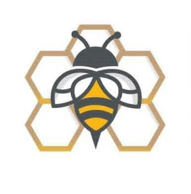
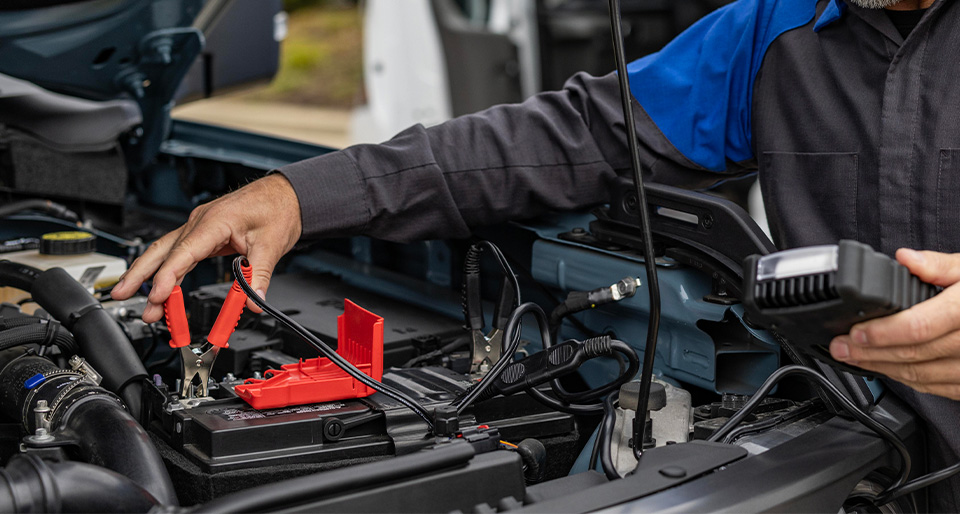
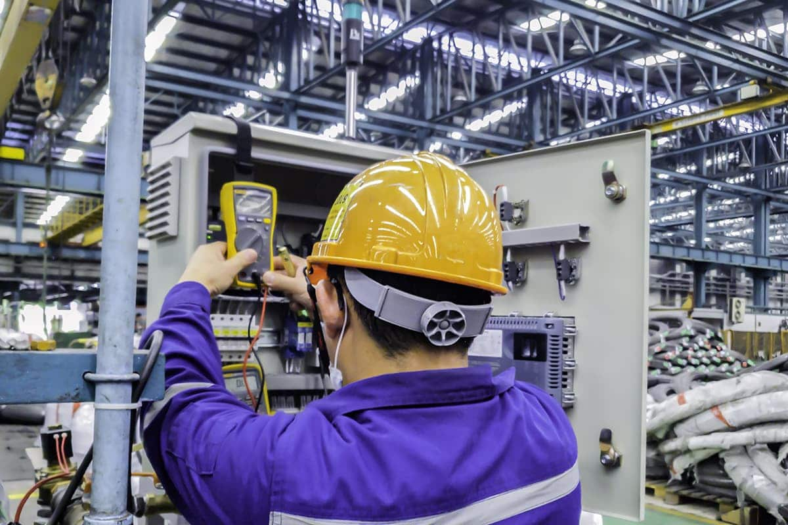

Historia del ITACE
El Instituto Tamaulipeco de Capacitación para el Empleo (ITACE) es una institución fundamental en el estado de Tamaulipas, creada con el firme propósito de ofrecer educación media superior y capacitación para el trabajo de alta calidad.
A lo largo de los años, el ITACE se ha distinguido por preparar a jóvenes competitivos, brindándoles herramientas prácticas y técnicas que les permiten integrarse con éxito al sector productivo o continuar con su desarrollo profesional.
Carreras Técnicas

Diseño Gráfico
Consiste en crear diseños visuales para comunicar ideas mediante imágenes, colores, letras y formas. Aprendes a utilizar programas de diseño para elaborar logotipos, carteles, anuncios, publicidad, ilustraciones y contenido para redes sociales.

Mantenimiento Automotriz
Se enfoca en aprender cómo funcionan los automóviles y cómo revisar, reparar y mantener sus diferentes sistemas. Estudias motores, frenos, transmisiones, sistemas eléctricos y electrónicos, además del uso de herramientas de diagnóstico.

Mantenimiento Industrial
Consiste en aprender a revisar, reparar y mantener las máquinas y los equipos que se utilizan en fábricas e industrias. Puedes estudiar electricidad, motores, sistemas mecánicos, neumática, hidráulica y detección de fallas para evitar que las máquinas dejen de funcionar.
Ciberseguridad
Se dedica a proteger computadoras, redes, sistemas y datos contra robos, virus y ataques informáticos. Aprendes sobre seguridad de redes, detección de amenazas, protección de información y formas de prevenir vulnerabilidades.
Inteligencia Artificial
Consiste en aprender a desarrollar y utilizar sistemas capaces de realizar tareas como reconocer imágenes, interpretar lenguaje, analizar datos y generar respuestas. Dependiendo del programa de estudios, puedes aprender programación, matemáticas, manejo de datos y fundamentos de aprendizaje automático (machine learning).
Logística
Se encarga de organizar el transporte, almacenamiento y distribución de productos para que lleguen al lugar correcto y a tiempo. Aprendes a controlar inventarios, organizar mercancías, planear rutas, registrar entradas y salidas y mejorar los procesos de distribución.